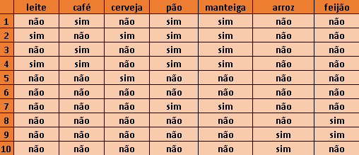
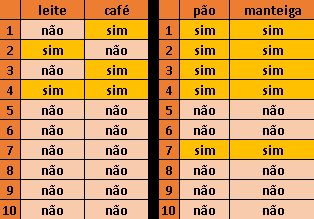
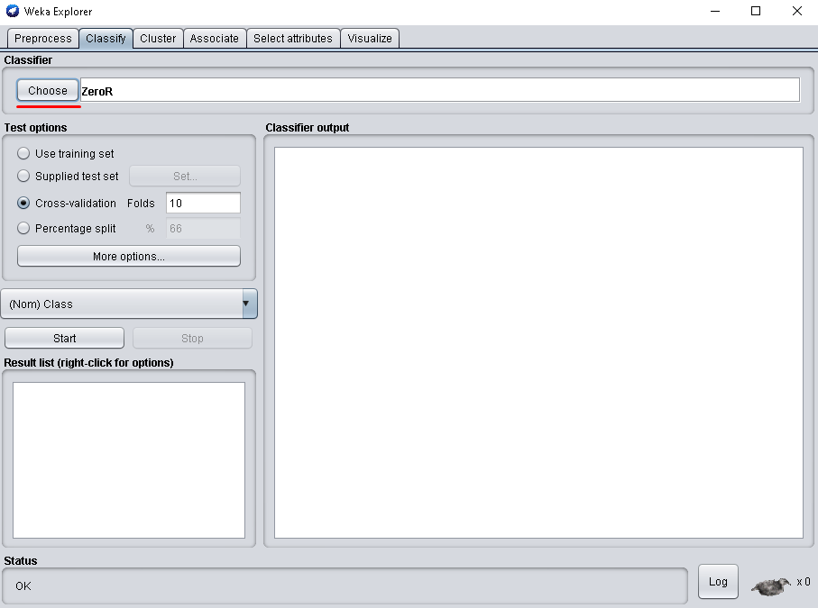
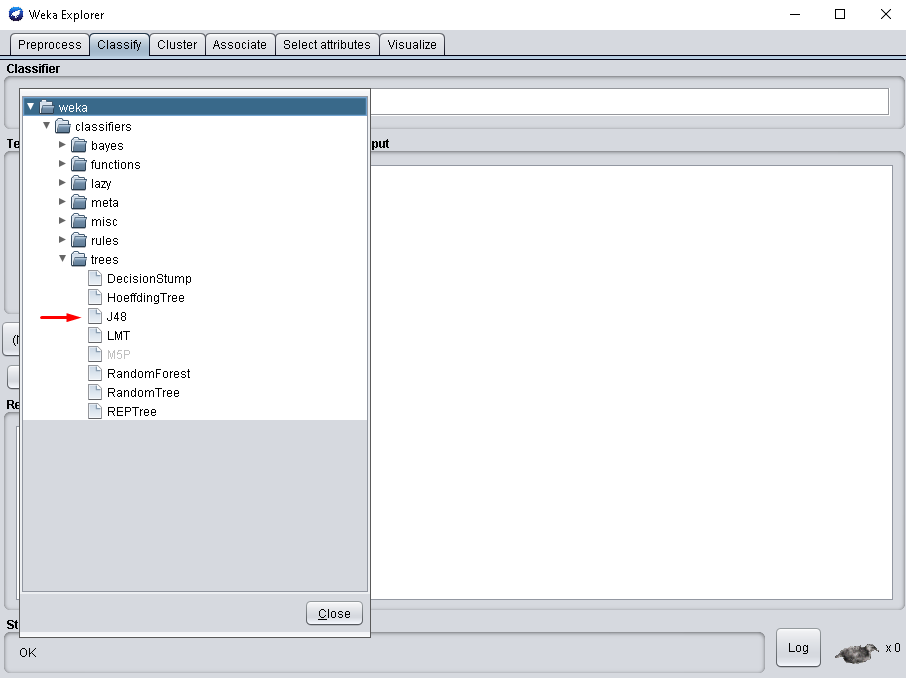
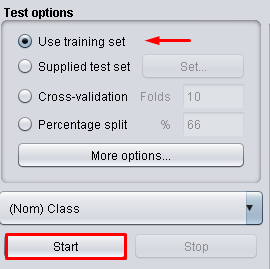
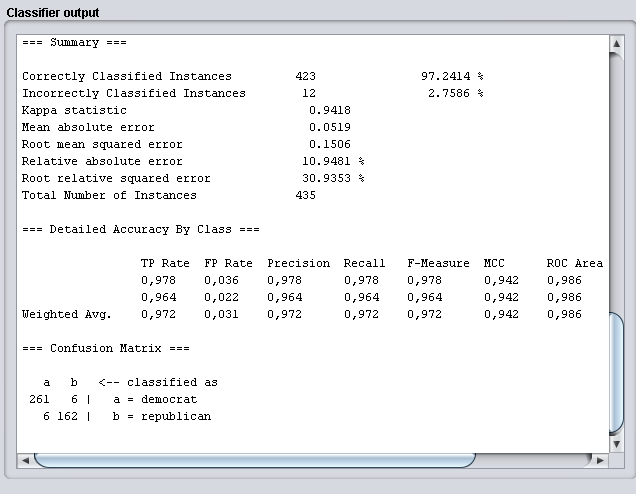
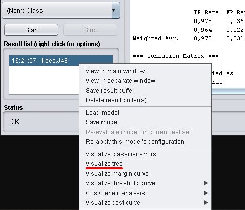
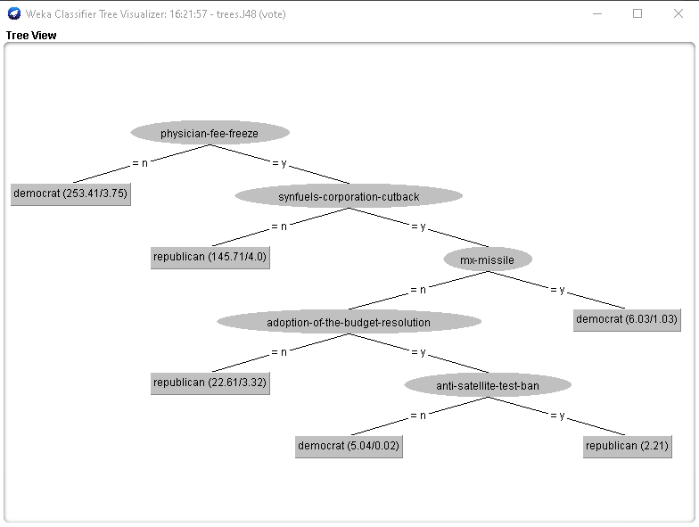

O que é árvore de decisão:
Uma árvore de decisão é uma ferramenta que auxilia uma pessoa ou grupo, a tomarem decisões a partir de suas ramificações e consequências. É bastante útil na orientação de discussões e guiar o grupo para encontrar uma solução de um problema, ou ajudar a elaborar um plano de ação. A árvore de decisão precisa ter um início e fim, mesmo que seja finalizado com possibilidades diferentes, não podendo deixar resultados em aberto.
Estrutura de uma Árvore de decisão:

A estrutura de uma árvore de decisão é constituída por nós, começando com um nó inicial, conhecido como Raiz, que se divide entre outros, cada nó representa uma opção que pode ser escolhida, podendo levar a outra opção ou um resultado final.
Onde isso se encaixa em Machine Learning:
Uma árvore de decisão por si só não é aprendizado de máquina, já que é possível criar uma sem a
utilização de um computador, com o objetivo de organizar melhor alguma ideia e tomar uma decisão, como
por exemplo, uma empresa que está planejando a campanha de Marketing de um produto, os funcionários
podem montar uma árvore de decisão pra decidir a estratégia para a campanha, e chegar ao resultado mais
benéfico para a empresa.
Na área do aprendizado de máquina, o computador constrói uma árvore de decisão a partir de dados
fornecidos pelo usuário, onde é realizado um desses dois tipos de métodos:
Método Supervisionado:
No método supervisionado, a análise é realizada com base em informações já fornecidas pelo usuário, o método supervisionado é dividido em duas subcategorias, regressão e classificação.
Classificação:
Nessa subcategoria de aprendizado supervisionado, é recebido uma entrada e a caracteriza de acordo com algum rótulo pré-definido. Normalmente usados quando a classificação é simples, podendo ser "Sim" ou "Não".
Regressão:
Assim como a classificação, regressão também recebe uma entrada, mas diferente da outra subcategoria, essa é utilizado para responder perguntas mais específicas, como por exemplo "Quanto custa?" ou "Quantos existem?".
Método Não Supervisionado:
Já no método não supervisionado, não há informações pré-definidas, o objetivo é encontrar características parecidas entre os dados fornecidos e os agrupar de acordo com elas.
Suporte e Confiança:
A tabela que está logo acima, representa um mercado com seus devidos produtos, e 10 clientes que visitaram esse mercado para fazer compras, o Suporte, é o cálculo de quantas vezes um item apareceu sobre a base, como por exemplo, o produto Café, de 10 pessoas que compraram no mercado, 3 delas levaram café, então o Suporte dele é de 30%, pois de todas as compras realizadas pelos clientes, foi calculado que 30% delas tinham café como um dos produtos adquirido.

Já no valor de Confiança, é calculado quantas vezes um produto é comprado em conjunto com outro, o caso mais evidente é dos produtos pão e manteiga, onde foi registrado que sempre que um cliente compra pão, ele também leva manteiga, mas obviamente não é todo mundo que compra os mesmos produtos sempre, como no caso dos produtos café e leite, 3 clientes compraram esses 2 produtos, mas apenas em 1 comprou os dois ao mesmo tempo, nesse caso o valor de Confiança calcula que a cada 2 pessoas que compram café ou leite, 1 delas leva os dois..
Visualizando árvores de decisão:
1º:
Ao abrir a página inicial do Weka, e escolher o arquivo desejado, selecione a aba classify. No meu caso
estarei utilizando um arquivo já pronto, que pode ser encontrado no link a baixo.
https://www.cs.waikato.ac.nz/ml/weka/ .
2º:
Na aba classifier, selecione a opção "Choose".
2º:
selecione a pasta tree e modelo J48.
3º:
Após isso, selecione a opção "Use Training Set" e aperte em Start.
4º:
Assim, os dados serão exibidos na aba ao lado.
4º:
Para visualizar a árvore de decisão, clique com o botão direito no arquivo desejado, na aba Result List, e selecione "Visualize Tree".
5º:
Assim, a árvore de decisão será exibida.
